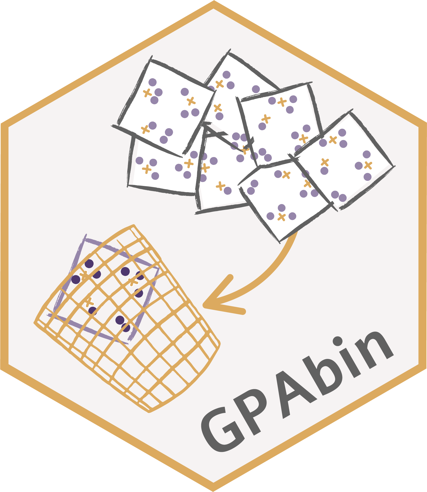
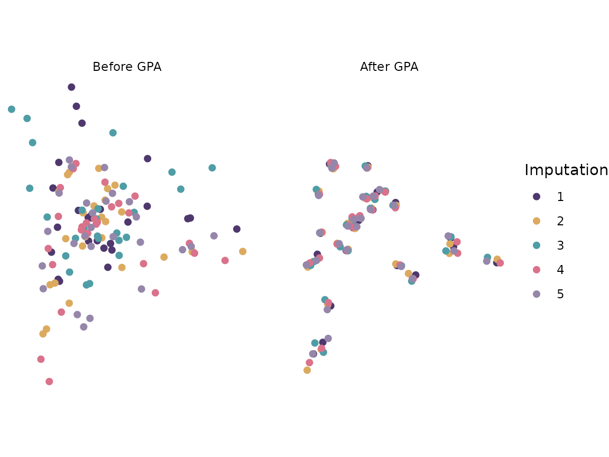
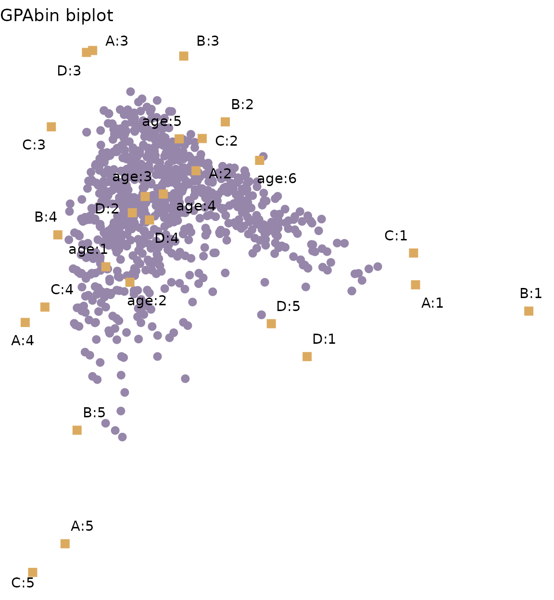
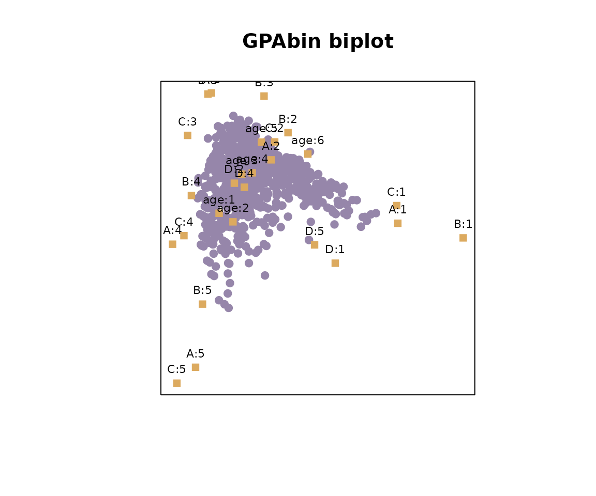
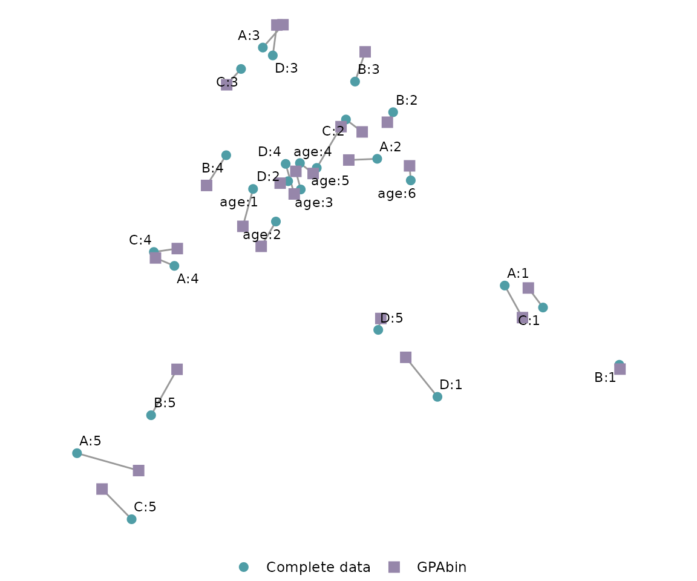

Getting started with GPAbin
Johané Nienkemper-Swanepoel and Claude
2026-11-15
Source:vignettes/GPAbin.Rmd
GPAbin.RmdWhy GPAbin?
Multiple imputation replaces each missing value with several plausible values, giving you completed data sets instead of one. Numerical summaries such as means and regression coefficients are then combined with Rubin’s rules. But what do you do when the “summary” is a picture?
If you construct a biplot from each completed data set, you get slightly different pictures. You cannot simply average their coordinates, because a dimension reduction solution is only determined up to rotation and reflection: the same configuration can come out flipped, spun or mirrored from one imputation to the next. Averaging unaligned coordinates would blur the display into nonsense.
GPAbin solves this in three steps (Nienkemper-Swanepoel,
le Roux and Gardner-Lubbe, 2023):
- construct a biplot for every imputed data set;
- use generalised orthogonal Procrustes analysis (GPA) to translate, rotate, reflect and scale all configurations onto a common target;
- average the aligned coordinates, mimicking the pooling step of Rubin’s rules, and draw a single unified GPAbin biplot.
The current version works with categorical data, using multiple correspondence analysis (MCA) as the dimension reduction technique. In the resulting biplot, points represent samples / observations and category level points (CLPs) represent the response categories of each variable.
Installation
CRAN
install.packages("GPAbin")The workflow at a glance
Every step takes a missmi object and returns it with new
elements added, so the whole analysis can be written as one native pipe
(|>):
missbp <- missmi(implist) |>
DRT() |>
GPAbin() |>
evaluation(compdat = compdat) |>
plot()| Step | Function | What it does |
|---|---|---|
| 1 | missmi() |
Prepares the input (a data frame with missing values, or a list of imputed data sets) |
| 2 | impute() |
Optional. Multiply imputes a data frame with missing values |
| 3 | DRT() |
Dimension reduction (MCA) on each imputed data set |
| 4 | GPAbin() |
Aligns the configurations with GPA and combines them |
| 5 | evaluation() |
Optional. Compares against a complete data solution, when one exists |
| 6 | plot() |
Draws the biplot (ggplot2 or base graphics) |
The data: attitudes towards science
We use a real survey data set that is included in the ca
package: wg93, the West German sample of the 1993
International Social Survey Programme (ISSP) on the
environment. It contains 871 respondents. Four questions (A
to D) measure attitudes towards science on a five-point
scale (1 = agree strongly to 5 = disagree strongly) and three
demographic variables record sex, age group and education. We keep the
four attitude items together with age group (six levels), giving five
categorical variables.
data("wg93", package = "ca")
compdat <- wg93[, c("A", "B", "C", "D", "age")]
str(compdat)
#> 'data.frame': 871 obs. of 5 variables:
#> $ A : Factor w/ 5 levels "1","2","3","4",..: 2 3 2 2 3 3 3 3 3 3 ...
#> $ B : Factor w/ 5 levels "1","2","3","4",..: 3 4 3 2 3 4 4 4 2 3 ...
#> $ C : Factor w/ 5 levels "1","2","3","4",..: 4 2 2 2 3 4 2 4 2 2 ...
#> $ D : Factor w/ 5 levels "1","2","3","4",..: 3 3 4 2 3 5 4 2 1 2 ...
#> $ age: Factor w/ 6 levels "1","2","3","4",..: 2 3 3 2 5 3 5 3 3 3 ...Take note: All variables must be factors;
wg9
Creating missing values
This data set is complete, which is useful: we can delete some values
on purpose and then check how well GPAbin recovers the
original picture. In reality, you would of course skip this step and
start the pipeline with your incomplete data set.
We generate values that are missing at random (MAR): the
chance that a person skips questions A to D
depends only on their age group, which is fully observed, and increases
with the age-group code (from 10% to 50%).
set.seed(2024)
p_miss <- c(0.10, 0.15, 0.20, 0.30, 0.40, 0.50)[as.integer(compdat$age)]
missdat <- compdat
for (v in c("A", "B", "C", "D")) {
missdat[runif(nrow(missdat)) < p_miss, v] <- NA
}
round(colMeans(is.na(missdat)) * 100, 1)
#> A B C D age
#> 26.3 27.1 27.1 25.0 0.0About a quarter of the answers to each attitude question are now missing.
Step 1: missmi()
missmi() is the entry point. It checks the data, records
key dimensions and the percentage of missing values and creates an
object of class missmi. The printed summary reports: the
number of imputations (m), the number of samples
(n), the number of variables (p) and the
percentage of missing values (miss_pct).
It accepts either a data frame containing missing values or a list of already imputed data sets.
missbp <- missmi(missdat)
missbp
#> [1] "Missing data with a total of 21 % missing values."
round(missbp$miss_pct, 1)
#> A B C D age
#> 26.3 27.1 27.1 25.0 0.0If your data contain no missing values, missmi() stops
with a message, because there is nothing to impute.
Step 2: impute()
impute() creates
imputed data sets with one of four available methods:
imp.method |
Approach | Underlying function |
|---|---|---|
"MIMCA" |
Multiple imputation with MCA (the default) | missMDA::MIMCA() |
"jomo" |
Joint modelling for categorical data | jomo::jomo1cat() |
"miceB" |
Bayesian chained equations | mi::mi() |
"mice" |
Chained equations with polytomous regression | mice::mice() |
We use "miceB" with
imputations. Setting a seed makes the result reproducible.
The imputed data sets are stored in missbp$dataimp, a
list with one data frame per imputation. They are complete:
missbp$m
#> [1] 5
anyNA(missbp$dataimp[[1]])
#> [1] FALSEStep 3: DRT()
DRT() (dimension reduction technique) runs an MCA on
each of the five imputed data sets. For each imputation it stores the
sample coordinates (Z), the category level point
coordinates (CLP) and the level names
(lvls).
missbp <- DRT(missbp)
length(missbp$Z)
#> [1] 5
dim(missbp$Z[[1]])
#> [1] 871 21
head(missbp$lvls[[1]], 6)
#> [1] "A:1" "A:2" "A:3" "A:4" "A:5" "B:1"Each of these five solutions is a perfectly valid MCA, but they are not yet comparable: nothing forces the five configurations to share the same orientation. That is what the next step takes care of.
Step 4: Align and combine with GPAbin()
This is the core of the package. GPAbin() aligns the
m configurations with generalised orthogonal Procrustes
analysis and then averages the aligned coordinates.
missbp <- missbp |> GPAbin()Four new elements are added to the object:
| Element | Contents |
|---|---|
Z.GPA.list |
Aligned sample coordinates, one matrix per imputation |
CLP.GPA.list |
Aligned category level points, one matrix per imputation |
Z.GPAbin |
Average sample coordinates, used for the GPAbin biplot |
CLP.GPAbin |
Average category level points, used for the GPAbin biplot |
To see what GPA did, we plot the category level points of all five imputations (first two dimensions, one colour per imputation) before and after alignment.

On the left, the five MCA solutions are scattered: every imputation
produced a differently rotated or reflected picture, so a simple average
would be meaningless. On the right, after GPA, each category level is
represented by a tight cluster of five points. Averaging within each
cluster gives the coordinates in CLP.GPAbin.
By default the centroid configuration is used as the target. You can
supply your own through the G.target argument if you want
to align to a particular reference configuration.
Step 5: plot()
plot() draws the GPAbin biplot. By default it uses
ggplot2; use engine = "base" for base
graphics.
missbp <- plot(missbp,
title = "GPAbin biplot",
CLP.col = "#DCAA5F",
Z.col = "#9686AA")
Dark points are respondents; gold squares are the category level
points, labelled variable:level. A respondent tends to have
answered a question with the category whose point lies nearest to them.
The overall shape is the arch that is typical of MCA on ordered response
scales: for questions A, B and C
the extreme categories 1 and 5 lie at opposite ends of the arch and the
neutral category 3 sits at its apex. The age groups are all found near
the centre of the display, so age is only weakly related to the attitude
responses. Take note: the orientation of a biplot is arbitrary: a
mirrored or rotated version carries exactly the same information.
plot() returns the missmi object with the
plot stored in missbp$plot.
Base graphics
missbp |> plot(engine = "base",
title = "GPAbin biplot",
CLP.col = "#DCAA5F",
Z.col = "#9686AA")
#> [1] "Missing data with a total of 21 % missing values."
Step 6 (optional): evaluating against the complete data
Because we created the missing values ourselves, we know what the
biplot of the complete data looks like.
evaluation() performs an MCA on the complete data supplied
through compdat, and compares it with the GPAbin biplot.
This is only possible for simulation studies or examples like this
one.
missbp <- evaluation(missbp, compdat = compdat)
missbp$eval.tab| Evaluation measures | |
|---|---|
| 1-PS | 0.8110 |
| SP | 0.8565 |
| RPR | 0.4868 |
| AMB | 0.2320 |
| RMSB | 0.3097 |
The table contains five measures:
- 1-PS: one minus the Procrustes statistic. It measures how closely the two configurations match after the best possible rotation. Values close to 1 are good.
- SP (similarity proportion): the proportion of all responses for which the category predicted from the GPAbin biplot equals the category in the complete data. Observed responses are kept as they are, so they count as correct by construction. Only the missing cells are actually predicted. Again, values close to 1 are good.
- RPR (response profile recovery): the proportion of respondents whose entire response profile is recovered correctly. This is a much stricter criterion than SP, with values close to 1 again reflecting successful recovery.
- AMB and RMSB: the absolute mean bias and root mean squared bias between the two configurations. Smaller values are better. They are hard to interpret on their own and are intended for comparing competing approaches applied to the same data.
evaluation() also stores the complete data coordinates
in compZs, compCLPs and complvls,
with the predicted categorical data sets in GPApred and
compPred. We can use these to draw the two sets of category
level points on top of each other. The orientation of a biplot is
arbitrary, so we first rotate the GPAbin coordinates onto the complete
data solution with a small orthogonal Procrustes helper.
The following figure can be constructed from the available output and is not currently available in the package:

Each grey segment links a category level’s position in the complete
data biplot to its position in the GPAbin biplot. Most segments are
short: even with about a quarter of the attitude responses missing, the
unified display stays close to the picture we would have obtained with
no missing data. The largest displacements occur for the rarely chosen
extreme categories (such as A:5 and C:5),
which are the hardest to place when many of their responses are
missing.
Already have your imputations?
impute() is a convenience. If you prefer to create the
imputations yourself, for example with mice, pass the list
of completed data sets straight to missmi(). A list is
recognised as “already imputed”, so impute() is
skipped.
imp <- mice::mice(missdat, m = 5, method = "polyreg", maxit = 5,
printFlag = FALSE, seed = 1)
implist_own <- mice::complete(imp, "all") # list of 5 completed data frames
own <- missmi(implist_own) |> DRT() |> GPAbin()
own
#> [1] "There are 5 imputations / variations of your data available."The package also includes ready-made simulated examples,
missdat (a data frame with about 35% missing values),
implist (five imputations of it) and compdat
(the complete data), which are handy for trying out the functions
quickly:
Good to know
- The current version supports categorical variables and MCA only.
- The biplot is displayed in two dimensions; the GPA alignment itself uses all available dimensions.
- The lower-level building blocks are exported:
GPA()(generalised Procrustes analysis of any list of configurations),OPA()(orthogonal Procrustes analysis) andCLPpred()(predicting categories from a biplot). See their help pages for details. - The
GPAbinapproach is not limited to imputations: it can combine variations of a visualisation of the same data, such as bootstrap resamples or data collected over time.
References
Nienkemper-Swanepoel, J., le Roux, N. J. and Gardner-Lubbe, S. (2023). GPAbin: unifying visualizations of multiple imputations for missing values. Communications in Statistics - Simulation and Computation, 52(6), 2666-2685. https://doi.org/10.1080/03610918.2021.1914089
ISSP Research Group (1993). International Social Survey Programme: Environment. http://www.issp.org